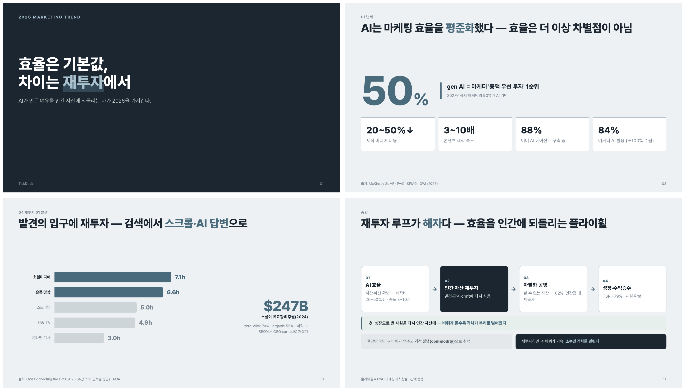

"이 숫자 어디에서 나온 거지?"
AI 덱 생성 도구에 주제 하나 넣어놨는데 몇 초 만에 슬라이드가 좌라락 나오면서 표도 그래프도 다 갖춰 나오는데, 딱 봐도 오?! 그럴듯해!
근데 이거 어디서 나온 숫자야? 출처가 없잖아??
오해 없이 말하자면 요즘 진짜 많잖아… 티비 방송하는 애들도 있고
근데 내가 원하는 수준으로 딸깍하고 나오는 게 없더라고
사실 나 회사 다닐 때 이런 발표자료, 기획서 만드는 게 일이었거든
그때 이게 어찌나 괴롭던지… 내 고통부터 좀 없애보려고 시작한 거라 더 그런가 봐
빨리 뽑는 거보다 내가 납득되는 수준이 될 때까지 만드는 쪽으로 자꾸 디벨롭 중이야
디자인부터 손대면 꼭 갈아엎는다
예전에도 그랬는데 내용을 잡고 디자인을 맞춰야지, 디자인 잡고 내용 맞추려고 하면 막 다 어그러지던데 또 그러더라고
옷부터 사고 거기에 몸을 맞추려는 그런 격인 거지
그래서 이전 경험을 토대로 자료를 우선 짜고 디자인을 그 자료에 맞는 걸로 맞춰 넣었고, 색도 내 취향으로 안 뽑고 디자인 사이트들 참고해서 조사해서 뽑아봤어

출처는 이름만 다는 게 아니더라
만들면서 제일 크게 와닿은 게 이거였음
AI가 뽑아준 자료는 숫자가 딱딱 박혀서 완벽해 보이는데, 막상 그 숫자가 어디서 왔는지 내가 자신 있게 말을 못 하겠는 거지
그래서 거꾸로, 실제 보고서를 열 군데쯤 뒤져서 숫자를 직접 확인했음
근데 이게 출처 이름만 적는 걸로는 안 돼 — "어디어디원" 달아놓는다고 검증이 아니라, 그 숫자가 진짜 그 보고서 안에 있는지까지 봐야 비로소 검증이더라고
모으는 것보다 이 확인이 훨씬 일이었는데, 여기가 빠른 길이랑 깊은 길을 가르는 지점 같았음
결국 내 눈으로 본다
이건 좀 웃긴 얘긴데
다 만들고 나서 AI한테 검수 좀 시켜봤거든?
근데 없는 오류를 세 번이나, 이거 꼭 고치라고 별표까지 달고 짚어줘서 🤣
하… 그래 날 도와주려는 건 알겠는데, 맞는지 아닌지는 결국 내가 직접 확인해봐야 하더라고
빠른 길이 나쁜 게 아니야
누군가는 그 속도와 그 정도 퀄리티를 원하는 사람도 많이 있겠지
근데 나는 그냥 손이 좀 더 가더라도 내가 만족할 만한 자료가 나왔으면 해서 그걸 파보는 중이고
솔직히 딸깍 한 번에 뚝딱 나오면 좋겠지만 아직 그 정도 수준까진 아니네
근데 이렇게 좀 손보고 나니까 내부 보고용으로 쓸 만한 수준까지는 나온 거 같아서 좀 만족스러움
여기서 좀 더 다듬고 좀 더 손보면…… 🫠
AI가 빠르게 다 채워줄수록, 근거가 어디서 왔는지·할루시네이션이 아닌지 확인하는 인간의 몫은 계속 필요한 것 같다
오늘은 아직 만들고 있는 중인 TickDeck 이야기
덱 만드는 건 아직도 다듬는 중이라, 다음엔 이 과정을 좀 덜 고생스럽게 만들 수 없나 좀 더 디벨롭해볼 듯